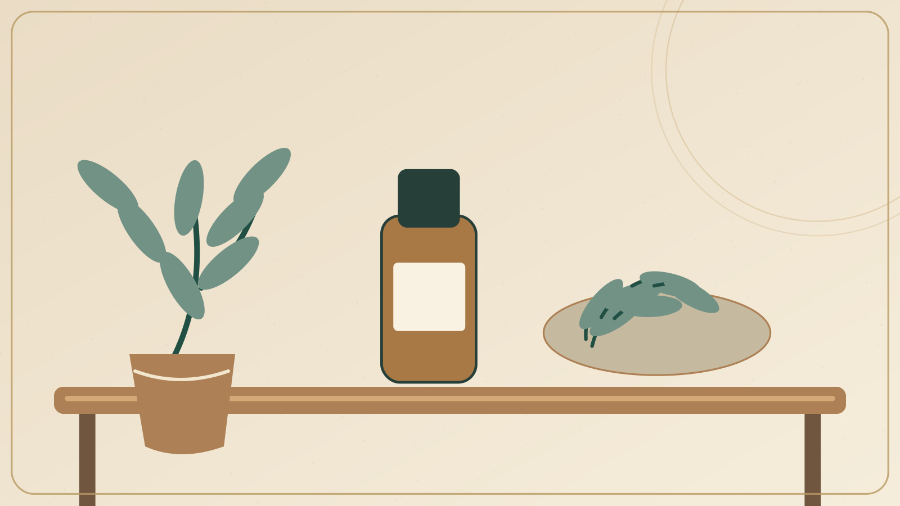

植物、木材、光、換気、個人の好みから東洋の空間を知ります。精油の効能や配合には触れません。
空間の快適さは香りだけではない
長くいたくなる空間には自然光、落ち着いた色、清潔な布、適度な余白などがあります。東洋美学は木、陶器、竹の影、草花を連想させますが、香りを加える必要はありません。環境を整え、清潔さと適度な換気を保ってから他の感覚的要素を考えると、生活習慣に合った空間になります。
木質、花、草本は感覚を表す言葉
木質の香りは乾いた木材、花の香りは淡い花や濃厚な花、草本の香りは新鮮な葉や乾燥植物を連想させることがあります。これらは主観的な感覚を表す言葉で、決まった身体作用を示しません。同じ匂いでも人によって正反対に感じることがあるので、強さで空間の質を判断しないでください。
香りの好みを尊重する
家族、同僚、来訪者の香りへの許容度は異なります。無香を好む人、淡い香りを好む人、特定の芳香用品で不快になる人もいます。共有空間に香りを加える前に希望を聞き、香りをなくせる選択肢を残しましょう。東洋風の演出だけなら陶器、布、木の色、植物など視覚的な要素を使えます。
香りの濃さより換気が大切
台湾環境部の化学知識マップは、一部の香り付き用品が室内空気質に影響する可能性を指摘し、換気や芳香用品の使用削減を勧めています。使用時は表示と安全説明に従い、用途の違う製品を混ぜないでください。本記事は精油の調合、皮膚への塗布、経口摂取、濃度を推奨しません。植物由来でも全員に適するとは限りません。
美学を日常生活に取り入れる
整った小さな一角から始めましょう。木の机、柔らかな光の照明、お気に入りの陶器、積み重ねすぎない物などです。草花が好きなら環境に合う植物を視覚的なアクセントにし、香りが苦手なら芳香製品を使わなくても構いません。効果の主張と結び付けず、自分と共有者に合えば十分です。
植物と芳香製品を同一視しない
鉢植え、ドライフラワー、木製家具を置くことと、室内に芳香製品を拡散することは別の選択です。子どもやペットがいる場合は置き場所や表示に特に注意しましょう。植物の色や枝葉の形、自然光を鑑賞するだけでも好みの雰囲気を作れます。
よくある質問：江瑞玲は精油サービスを提供していますか？
本記事は一般的な香りの文化と空間美学を紹介するもので、江瑞玲経絡リラクゼーションが芳香製品や精油サービスを提供していることを意味しません。実際の内容は本人に確認してください。芳香用品で不快になったら接触を中止し、必要に応じ適切な専門家に相談してください。当サイトは病気の処置、身体機能の調整、特定効果の宣伝に芳香製品や植物の香りを用いません。
参考資料
環境部化学知識マップ｜香り製品と室内空気質（閲覧：2026-11-26）
衛生福利部｜精油類製品の管理説明（閲覧：2026-11-26）
本文は一般的な生活・文化情報で、個別の医療助言ではありません。本人による確認待ちです。実際のサービス内容、料金、時間、場所はお問い合わせで確認してください。